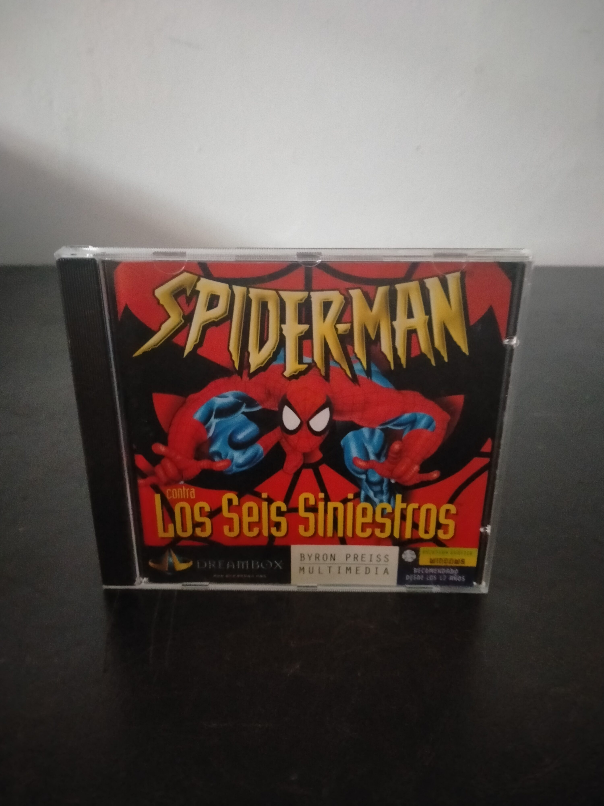

Ficha #000000
Spider-Man contra Los Seis Siniestros
Spider-Man contra Los Seis Siniestros es una aventura interactiva publicada en 1996 y basada en el universo de Marvel Comics. El jugador alterna entre Peter Parker y Spider-Man mientras investiga una amenaza organizada por seis de sus adversarios clásicos: Doctor Octopus, el Duende, Shocker, Camaleón, Mysterio y el Buitre. Su desarrollo combina exploración mediante interfaz point and click, conversaciones, búsqueda de objetos, decisiones narrativas, puzles y secuencias de acción o minijuegos. La presentación emplea gráficos bidimensionales con estética de cómic, voces digitalizadas y contenido multimedia propio del auge del CD-ROM doméstico de mediados de los años noventa. Esta edición española de DreamBox destaca por ofrecer textos y voces en castellano y constituye una muestra representativa de las adaptaciones multimedia de personajes de cómic comercializadas para compatibles PC.
- Formato
- Jewel Case
- Plataforma
- MsDos Win3.x
- Género
- Aventura gráfica Point and click Acción Aventura interactiva Superhéroes
- Serie
- Todos Jewel Case
- Desarrollador
- Brooklyn Multimedia, Byron Preiss Multimedia
- Distribuidor
- Byron Preiss Multimedia, DreamBox
- EAN
- —
Contenido de la edición
- Caja jewel case
- CD-ROM
Preservación
- Protección
- No determinado
- Formato recomendado
- BIN/CUE
- Jugable en virtualización
- Sí
Preservación recomendada mediante una imagen completa del CD-ROM en formato BIN/CUE, acompañada de la digitalización de las carátulas y de cualquier documentación existente. Su ejecución virtual es viable mediante emulación de MS-DOS o una máquina virtual con Windows de 16 bits y soporte multimedia.